In this workshop we will fit general linear models to data,
implemented in the R command glm(). See the “Fit model” tab
of the R tips pages for help.
A generalized linear model is useful when the response variable has a distribution other than the normal distribution, and when a transformation of the data is undesirable or impossible. Example situations include binary response data (1 or 0, dead or alive) or data that are counts (number of offspring, leaves, or tattoos). The approach is also useful in the analysis of contingency tables.
The song sparrow population on the island of Mandarte was studied for many years by Jamie Smith, Peter Arcese, and collaborators. The birds were measured and banded and their fates on the island were recorded over many years. Here we will look for evidence of natural selection using the relationship between phenotypes and survival.
The data file, located here, gives survival of young-of-the-year females over their first winter (1=survived, 0=died). The file includes measurements of beak and body dimensions: body mass (g), wing length, tarsus length, beak length, beak depth, beak width (all in mm), year of birth, and survival. These data were analyzed previously in D. Schluter and J. N. M Smith (1986, Evolution 40: 221-231).
Read the data from the file and inspect the first few lines to make sure it was read correctly.
We’ll be comparing survival probabilities among different years. To this end, make sure that year is a categorical variable in your data frame.
Plot survival against tarsus length of female sparrows. Use a method to reduce the overlap of points (the response variable is 0 or 1) to see the patterns more clearly.
Examine the plot. Can you visualize a trend? Use a smoothing method to see if any trend is present (most methods won’t constrain the curve to lie between 0 and 1, but at least you’ll get an idea).
Let’s start by ignoring the fact that the data are from multiple years. If time permits we can add year to the model to see how much difference it makes.
The response variable is binary. What probability distribution is appropriate to describe the error distribution around a model fit? What is an appropriate link function?
Fit a generalized linear model to the data on survival and tarsus length.
Use visreg() to visualize the model fit.
Obtain the estimated regression coefficients for the fitted
model. What is the interpretation of these coefficients? On a piece of
paper, write down the complete formula for the model shown in the
visreg() plot.
Use the coefficients to calculate the predicted survival probability of a song sparrow having tarsus length 20.5 mm*. Does the result agree with your plot of the fitted regression curve?
The ratio (-intercept/slope) estimates the point at which
probability of survival is changing most rapidly. In toxicology this
point is known as the LD50. Calculate this value** and
compare it visually with the fitted curve. Does it agree? Finally, the
slope of the curve at a given value for the explanatory variable
x is b * p(x) * ( 1 - p(x) ), where b is the
slope coefficient of the fitted logistic regression model and
p(x) is the predicted probability of survival at that
x.
Calculate the likelihood-based 95% confidence interval for the logistic regression coefficients.
The summary(z) output for the regression
coefficients also includes “z values” and P-values. What
caution would you take when interpreting these P-values? Use a
more accurate method to test the null hypothesis of zero slope.
If time permits, add year to your logistic regression model (make sure that year is a categorical variable in your data set). Never mind the interaction between year and tarsus length. Plot the resulting curves. Is there any evidence of a difference among years in the relationship between survival and tarsus length in these data?
* -1.148577; 0.2407491
** 19.58683
library(ggplot2)
library(visreg)
library(MASS)
# 1.Read the data
x <- read.csv(url("https://www.zoology.ubc.ca/~bio501/R/data/songsparrow.csv"),
stringsAsFactors = FALSE)
head(x)## mass wing tarsus blength bdepth bwidth year sex survival
## 1 23.7 67.0 17.7 9.1 5.9 6.8 1978 f 1
## 2 23.1 65.0 19.5 9.5 5.9 7.0 1978 f 0
## 3 21.8 65.2 19.6 8.7 6.0 6.7 1978 f 0
## 4 21.7 66.0 18.2 8.4 6.2 6.8 1978 f 1
## 5 22.5 64.3 19.5 8.5 5.8 6.6 1978 f 1
## 6 22.9 65.8 19.6 8.9 5.8 6.6 1978 f 1# 2. Year as categorical variable
x$year <- as.character(x$year)
# 3. Plot survival against tarsus length
ggplot(x, aes(tarsus, survival)) +
geom_jitter(color = "firebrick", size = 3, height = 0.04, width = 0, alpha = 0.5) +
labs(x = "Tarsus length (mm)", y = "Survival") +
theme_classic()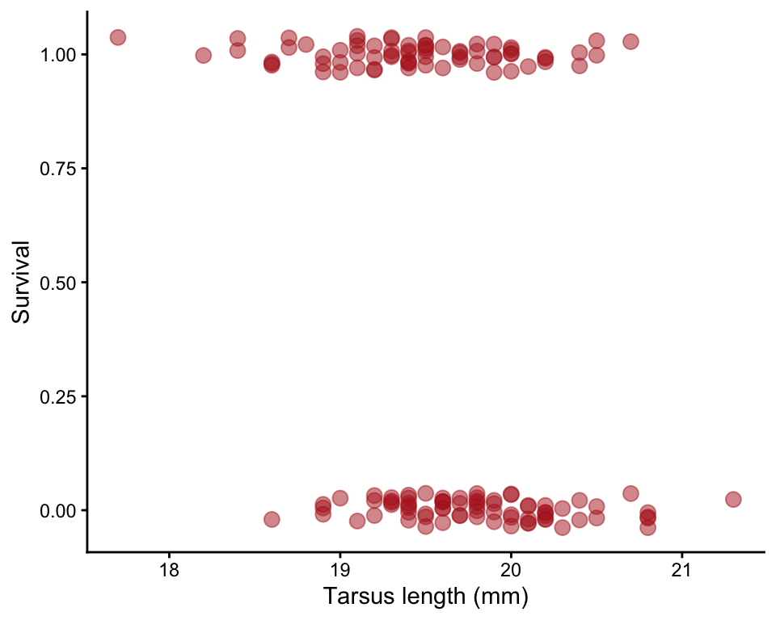
# 4. Examine the plot. Can you visualize a trend?
ggplot(x, aes(tarsus, survival)) +
geom_jitter(color = "firebrick", size = 3, height = 0.04, width = 0, alpha = 0.5) +
geom_smooth(method = "loess", size = 1, col = "black", se = FALSE) +
labs(x = "Tarsus length (mm)", y = "Survival") +
theme_classic()## Warning: Using `size` aesthetic for lines was deprecated in ggplot2 3.4.0.
## ℹ Please use `linewidth` instead.
## This warning is displayed once every 8 hours.
## Call `lifecycle::last_lifecycle_warnings()` to see where this warning was
## generated.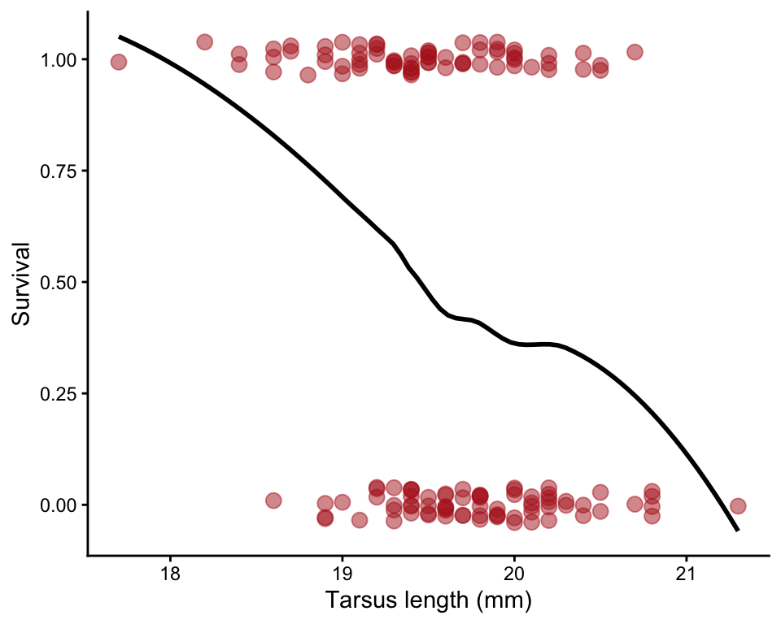
# 5. Binomial distribution. Logit link function
# 6. Fit generalized linear model
z <- glm(survival ~ tarsus, family = binomial(link="logit"), data = x)# 7. Visualize model fit (I added the points in a second step)
visreg(z, xvar = "tarsus", scale = 'response', rug = FALSE, ylim = c(-.1, 1.1))
points(jitter(survival, 0.1) ~ tarsus, data = x, pch = 1, col = "firebrick", lwd = 1.5)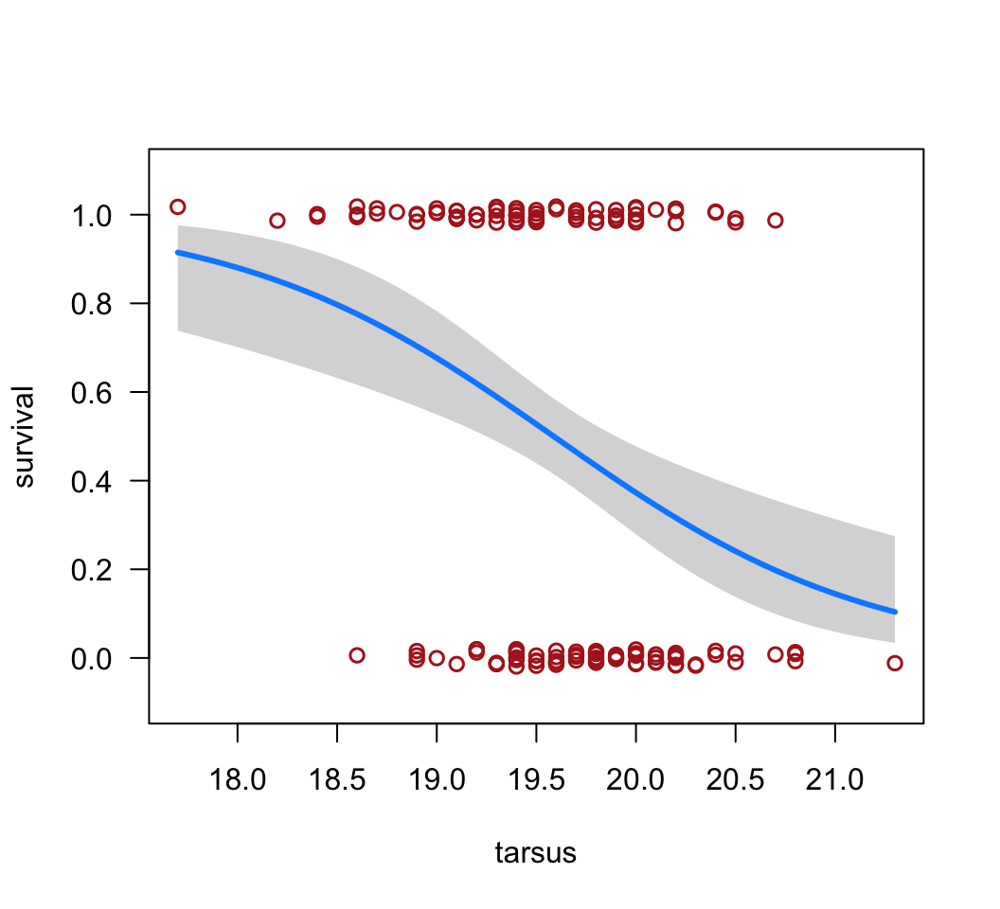
# 8. Estimated regression coefficients of the linear predictor
summary(z)##
## Call:
## glm(formula = survival ~ tarsus, family = binomial(link = "logit"),
## data = x)
##
## Coefficients:
## Estimate Std. Error z value Pr(>|z|)
## (Intercept) 24.6361 6.7455 3.652 0.000260 ***
## tarsus -1.2578 0.3437 -3.659 0.000253 ***
## ---
## Signif. codes: 0 '***' 0.001 '**' 0.01 '*' 0.05 '.' 0.1 ' ' 1
##
## (Dispersion parameter for binomial family taken to be 1)
##
## Null deviance: 200.95 on 144 degrees of freedom
## Residual deviance: 185.04 on 143 degrees of freedom
## AIC: 189.04
##
## Number of Fisher Scoring iterations: 4# 9. Predicted survival probability of a song sparrow having tarsus length 20.5 mm
predict(z, newdata = data.frame(tarsus = 20.5), type = "response")## 1
## 0.2407491# 10. LD50
dose.p(z)## Dose SE
## p = 0.5: 19.58683 0.1398026# 11. Likelihood-based 95% confidence intervals (logit scale)
confint(z)## Waiting for profiling to be done...## 2.5 % 97.5 %
## (Intercept) 12.035020 38.6162515
## tarsus -1.970217 -0.6157285# 12. Test null hypothesis of zero slope
anova(z, test = "Chi")## Analysis of Deviance Table
##
## Model: binomial, link: logit
##
## Response: survival
##
## Terms added sequentially (first to last)
##
##
## Df Deviance Resid. Df Resid. Dev Pr(>Chi)
## NULL 144 200.95
## tarsus 1 15.908 143 185.04 6.65e-05 ***
## ---
## Signif. codes: 0 '***' 0.001 '**' 0.01 '*' 0.05 '.' 0.1 ' ' 1# 13. Add year
z <- glm(survival ~ tarsus + year, family = binomial(link="logit"), data = x)
anova(z, test = "Chi")## Analysis of Deviance Table
##
## Model: binomial, link: logit
##
## Response: survival
##
## Terms added sequentially (first to last)
##
##
## Df Deviance Resid. Df Resid. Dev Pr(>Chi)
## NULL 144 200.95
## tarsus 1 15.9079 143 185.04 6.65e-05 ***
## year 3 1.7831 140 183.26 0.6186
## ---
## Signif. codes: 0 '***' 0.001 '**' 0.01 '*' 0.05 '.' 0.1 ' ' 1visreg(z, xvar = "tarsus", by = "year", scale = "response", rug = FALSE)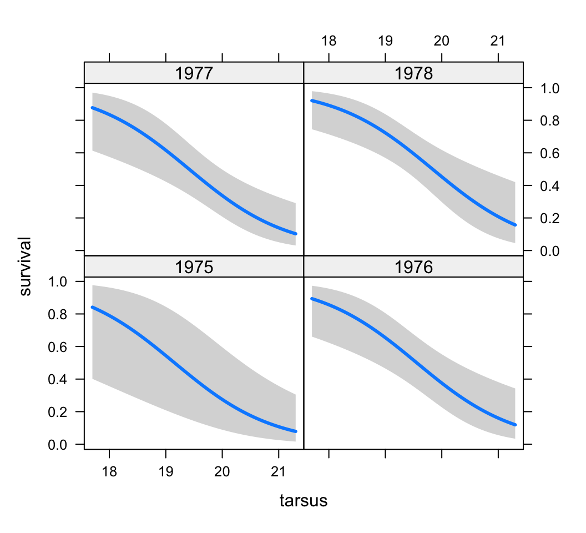
The horseshoe crab, Limulus polyphemus, has two alternative male reproductive morphs. Some males attach to females with a special appendage. The females bring these males with them when they crawl onto beaches to dig a nest and lay eggs, which the male then fertilizes. Other males are satellites, which are unattached to females but crowd around nesting pairs and obtain fertilizations. What attributes of a female horseshoe crab determine the number of satellite males she attracts on the beaches?
The data here provide measurements of 173 female horseshoe crabs and record the number of satellites she attracted. The data were gathered by Brockman (1996. Satellite male groups in horseshoe crabs, Limulus polyphemus. Ethology 102:1-21) and were published by Agresti (2002, Categorical data analysis, 2nd ed. Wiley). The variables are female color, spine condition, carapace width (cm), mass (kg), and number of satellite males.
Read the data from the file. View the first few lines of data to
make sure it was read correctly. Use the str() command to
see the variables and groups.
Plot the number of satellites against the width of the carapace, a measure of female body size. Fit a smooth curve to examine the trend.
Fit a generalized linear model to the relationship between number of satellite males and female carapace width. What type of variable is the number of satellites? What probability distribution might be appropriate to describe the error distribution around a model fit? What is the appropriate link function?
Visualize the model fit on the transformed scale, including
confidence bands. This plot reminds us that on the transformed scale,
glm() is fitting a straight line relationship. (Don’t worry
about the points – they aren’t the transformed data, but rather are
“working values” for the response variable from the last iteration of
model fitting, which glm() uses behind the scenes to fit
the model on the transformed scale.)
Visualize the model fit on the original data scale. Note that is it curvilinear.
Extract the estimated regression coefficients from your model object. What is the interpretation of these coefficients?
Calculate the likelihood-based 95% confidence interval for the
regression coefficients. The most useful estimate is that for the slope:
exp(slope) represents the multiple to the response variable
accompanying a 1-unit change in the explanatory variable. In other
words, if the slope were found to be 1.2, this would indicate that a 1
cm increase in carapace width of a female is accompanied by a 1.2-fold
increase in the number of male satellites.
Test the null hypothesis of no relationship between number of satellite males and female carapace width. Notice how small the \(P\)-value is for the null hypothesis test for the slope. I’m afraid that this is a little optimistic. Why? Read on.
When you extracted the regression coefficients from your model object, you probably saw the following line of output: “(Dispersion parameter for poisson family taken to be 1)”. What are we really assuming* here?
If you did not want to rely on this assumption (or you wanted to estimate the dispersion parameter), what option is available to you? Refit a generalized linear model without making the assumption that the dispersion parameter is 1.
Extract and examine the coefficients of the new
glm() model object. Examine the estimated dispersion
parameter. Is it close to 1? On this basis, which of the two
glm fits to the same data would you regard as the more
reliable?
How do the regression coefficients of this new fit compare with the estimates from the earlier model fit? How do the standard errors compare? Why are they larger** this time?
Visualize the new model fit and compare with the plot of the earlier fit. What difference do you notice?
Redo the test of significance for the slope of the relationship
between number of satellite mates and female carapace width. Remember to
use the \(F\) test rather than the
likelihood ratio test in the anova() command when using
quasi-likelihood. How do the results compare with those from the
previous fit?
# 1. Read data
x <- read.csv(url("https://www.zoology.ubc.ca/~bio501/R/data/satellites.csv"),
stringsAsFactors = FALSE)
head(x)## color spine width.cm nsatellites mass.kg
## 1 medium both.bad 28.3 8 3.05
## 2 dark-medium both.bad 22.5 0 1.55
## 3 light-medium good 26.0 9 2.30
## 4 dark-medium both.bad 24.8 0 2.10
## 5 dark-medium both.bad 26.0 4 2.60
## 6 medium both.bad 23.8 0 2.10# 2. Plot
ggplot(x, aes(width.cm, nsatellites)) +
geom_jitter(color = "firebrick", size = 3, height = 0.2, width = 0, alpha = 0.5) +
geom_smooth(method = "loess", size = 1, col = "black", se = FALSE) +
labs(x = "Carapace width (mm)", y = "No. satellites") +
theme_classic()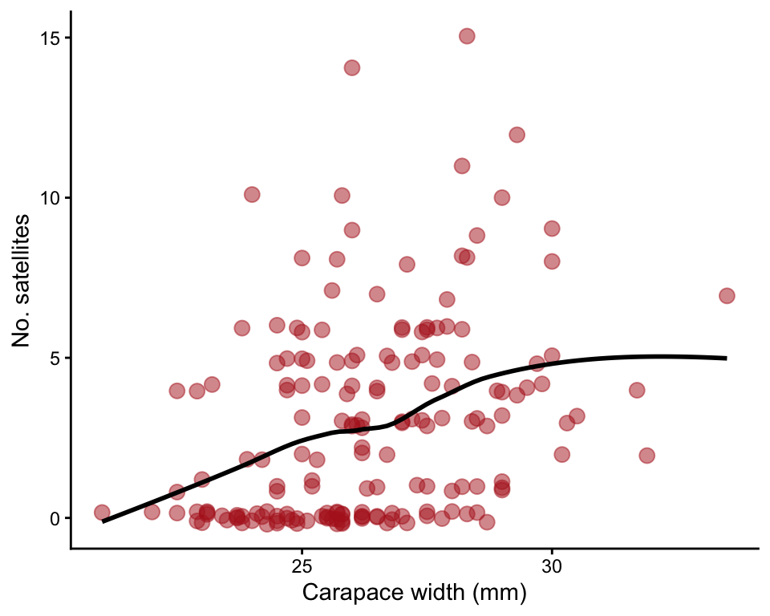
# 3. Fit model to count data, Poisson distribution, log link function
z <- glm(nsatellites ~ width.cm, family = poisson(link = "log"), data = x)# 4. Visualize model fit (transformed scale)
visreg(z, xvar = "width.cm")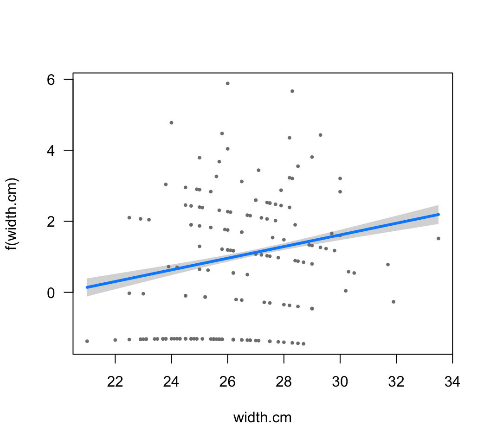
# 5. Visualize model fit (original scale), points overlaid
visreg(z, xvar = "width.cm", scale = "response", rug = FALSE)
points(jitter(nsatellites, 0.2) ~ width.cm, data = x, pch = 1,
col = "firebrick", lwd = 1.5)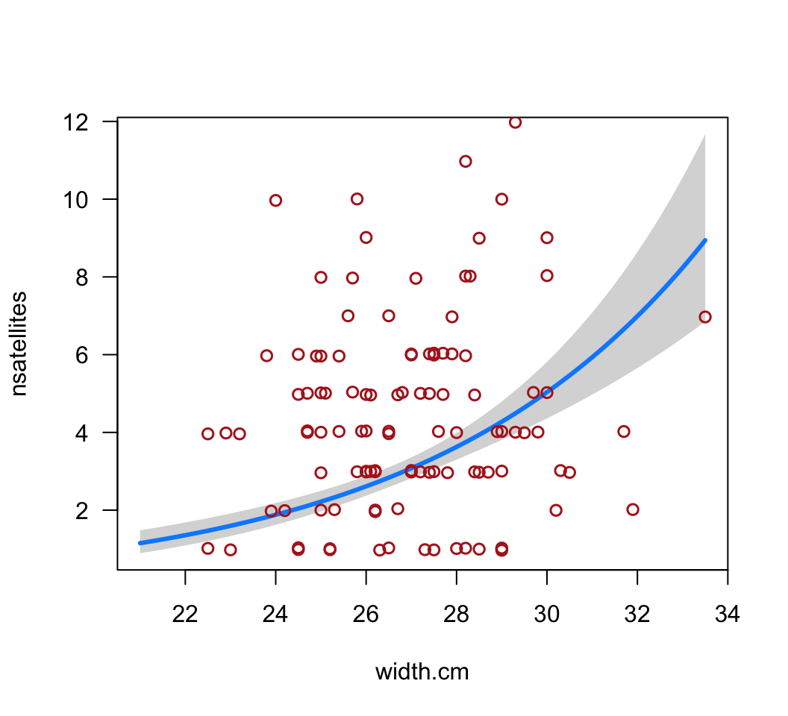
# 6. Estimated regression coefficients
summary(z)##
## Call:
## glm(formula = nsatellites ~ width.cm, family = poisson(link = "log"),
## data = x)
##
## Coefficients:
## Estimate Std. Error z value Pr(>|z|)
## (Intercept) -3.30476 0.54224 -6.095 1.1e-09 ***
## width.cm 0.16405 0.01997 8.216 < 2e-16 ***
## ---
## Signif. codes: 0 '***' 0.001 '**' 0.01 '*' 0.05 '.' 0.1 ' ' 1
##
## (Dispersion parameter for poisson family taken to be 1)
##
## Null deviance: 632.79 on 172 degrees of freedom
## Residual deviance: 567.88 on 171 degrees of freedom
## AIC: 927.18
##
## Number of Fisher Scoring iterations: 6# 7. Likelihood-based 95% confidence interval
confint(z)## Waiting for profiling to be done...## 2.5 % 97.5 %
## (Intercept) -4.3662326 -2.2406858
## width.cm 0.1247244 0.2029871# 8. Optimistic test
anova(z, test = "Chi")## Analysis of Deviance Table
##
## Model: poisson, link: log
##
## Response: nsatellites
##
## Terms added sequentially (first to last)
##
##
## Df Deviance Resid. Df Resid. Dev Pr(>Chi)
## NULL 172 632.79
## width.cm 1 64.913 171 567.88 7.828e-16 ***
## ---
## Signif. codes: 0 '***' 0.001 '**' 0.01 '*' 0.05 '.' 0.1 ' ' 1# 10. Refit
z2 <- glm(nsatellites ~ width.cm, family = quasipoisson(link = "log"), data = x)
# 11. Coefficients
summary(z2)##
## Call:
## glm(formula = nsatellites ~ width.cm, family = quasipoisson(link = "log"),
## data = x)
##
## Coefficients:
## Estimate Std. Error t value Pr(>|t|)
## (Intercept) -3.30476 0.96729 -3.417 0.000793 ***
## width.cm 0.16405 0.03562 4.606 7.99e-06 ***
## ---
## Signif. codes: 0 '***' 0.001 '**' 0.01 '*' 0.05 '.' 0.1 ' ' 1
##
## (Dispersion parameter for quasipoisson family taken to be 3.182205)
##
## Null deviance: 632.79 on 172 degrees of freedom
## Residual deviance: 567.88 on 171 degrees of freedom
## AIC: NA
##
## Number of Fisher Scoring iterations: 6# 13. Visualize
visreg(z2, xvar = "width.cm", scale = "response", rug = FALSE)
points(jitter(nsatellites, 0.2) ~ width.cm, data = x, pch = 1,
col = "firebrick", lwd = 1.5)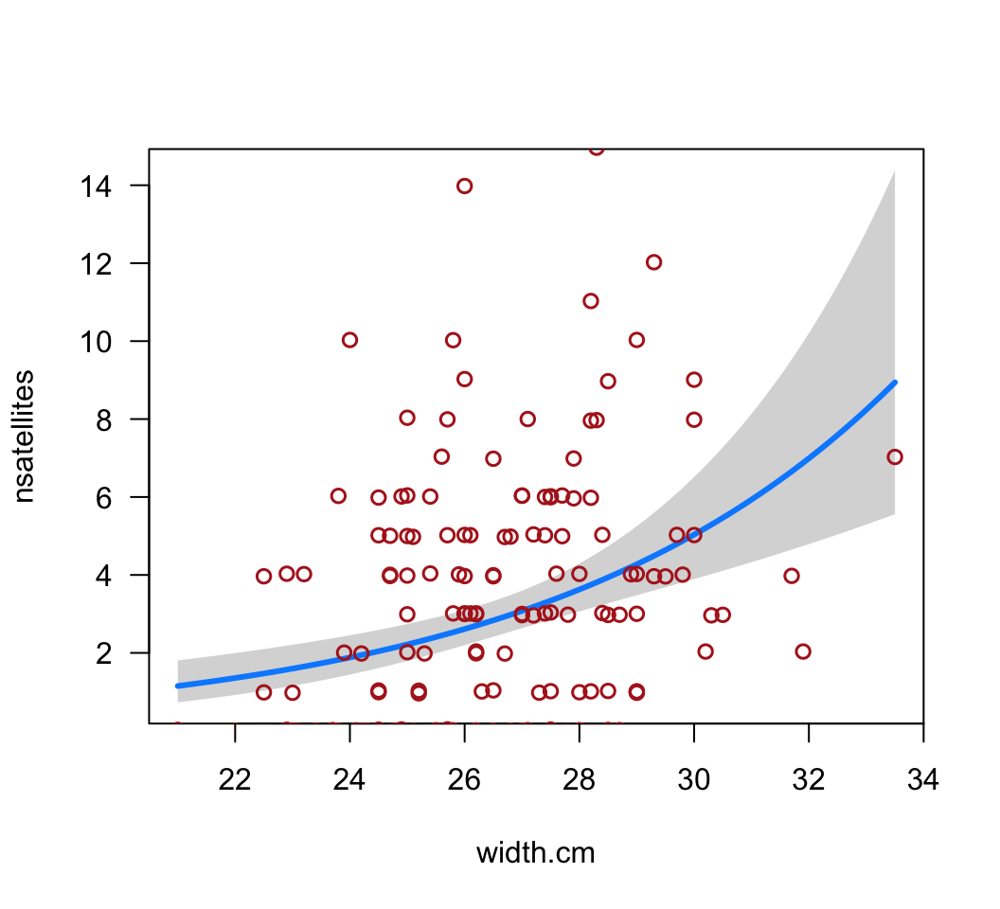
# 14. Redo test
anova(z2, test = "F")## Analysis of Deviance Table
##
## Model: quasipoisson, link: log
##
## Response: nsatellites
##
## Terms added sequentially (first to last)
##
##
## Df Deviance Resid. Df Resid. Dev F Pr(>F)
## NULL 172 632.79
## width.cm 1 64.913 171 567.88 20.399 1.168e-05 ***
## ---
## Signif. codes: 0 '***' 0.001 '**' 0.01 '*' 0.05 '.' 0.1 ' ' 1 * By using the Poisson distribution to model the residuals,
we assume that for any given value of the x-variable, the
variance of y is equal to the mean of y.
Typically, however, in real data the variance of y is
greater than the mean of y at any given x
(“overdispersion”). One reason is that a variety of factors cause
variation in y, and most aren’t included in the model being
fitted.
** Because the model is now taking account of the actual amount of
variance in y for each x, which is larger than
that assumed by the first model you fitted.
This last exercise is to demonstrate the use of glm() to
model frequencies of different combinations of two (or more) variables
in a contingency table. The presence of an interaction between the
variables indicates that the relative frequencies of different
categories for one variable differ between categories of the other
variable. In other words, the two variables are then not
independent.
Kuru is a prion disease (similar to Creutzfeldt–Jakob disease) of the Fore people of highland New Guinea. It was once transmitted by the consumption of deceased relatives at mortuary feasts, a ritual that was ended by about 1960. Using archived tissue samples, Mead et al. (2009, New England Journal of Medicice 361: 2056-2065) investigated genetic variants that might confer resistance to kuru. The data are genotypes at codon 129 of the prion protein gene of young and elderly individuals all having the disease. Since the elderly individuals have survived long exposure to kuru, unusually common genotypes in this group might indicate resistant genotypes. The data are here.
Read the data from the file. View the first few lines of data to make sure it was read correctly.
Create a contingency table comparing the frequency of the three genotypes at codon 129 of the prion protein gene of young and elderly individuals (all having the disease). Notice any pattern? By comparing the frequencies between young people and older people, which genotype is likely to be more resistant to the disease?
(Optional) Create a grouped bar graph illustrating the relative frequencies of the three genotypes between afflicted individuals in the two age categories.
To model the frequencies you will first need to convert the
contingency table to a “flat” frequency table using
data.frame().
Fit a generalized linear model to the frequency table. To begin, fit the additive model, i.e., use a model formula without an interaction between the two variables genotype and age.
Visualize the fit of the additive model to the frequency data. Notice how the additive model is constrained from fitting the exact frequencies in each category.
Repeat the model fitting but include the interaction term as well. Visualize the fit of the model to the data. Notice how this “full” model really is full – it fits the frequencies exactly.
Test whether the relative frequencies of the three genotypes differs between the two age groups (i.e., whether there is a significant interaction between age and genotype).
# 1. Read the data
x <- read.csv(url("https://www.zoology.ubc.ca/~bio501/R/data/kurudata.csv"),
stringsAsFactors = FALSE)
head(x)## Genotype Cohort
## 1 MM old
## 2 MM old
## 3 MM old
## 4 MM old
## 5 MM old
## 6 MM old# 2. Contingency table
x$Cohort <- factor(x$Cohort, levels = c("young","old"))
kurutable <- table(x)
kurutable## Cohort
## Genotype young old
## MM 22 13
## MV 12 77
## VV 14 14# 3. (Optional) Grouped bar graph
ggplot(x, aes(x = Cohort, fill = Genotype)) +
geom_bar(stat = "count", position = position_dodge2(preserve="single")) +
labs(x = "Cohort", y = "Frequency") +
theme_classic()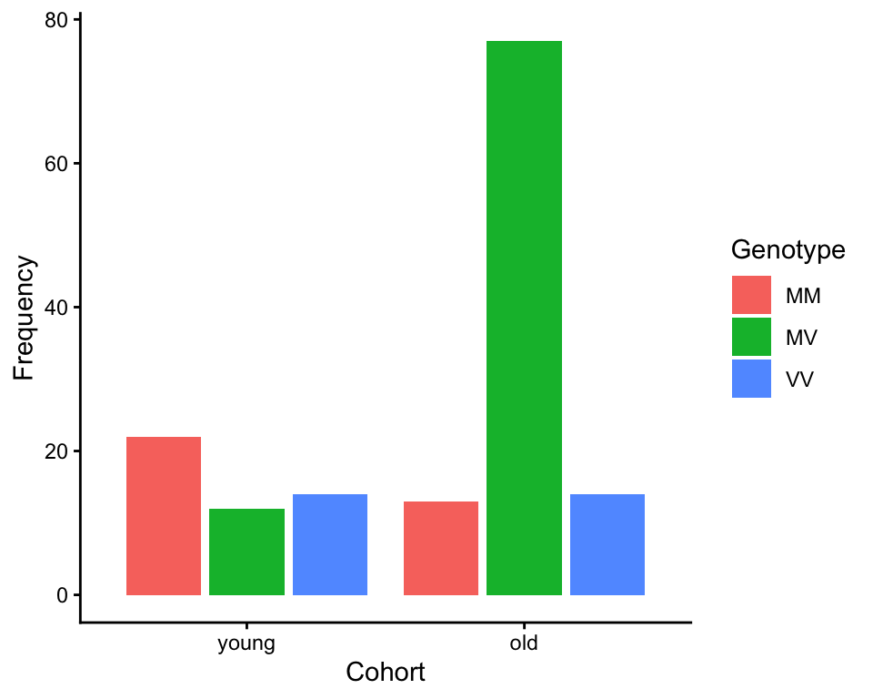
# 4. Model the frequencies
x1 <- data.frame(kurutable)
x1## Genotype Cohort Freq
## 1 MM young 22
## 2 MV young 12
## 3 VV young 14
## 4 MM old 13
## 5 MV old 77
## 6 VV old 14# 5. Fit additive model
z <- glm(Freq ~ Genotype + Cohort, family = poisson(link = "log"), data = x1)# 6. Visualize model fit
# (scale = "response" is broken, visualize on transformed scale instead)
visreg(z, xvar = "Genotype", by = "Cohort")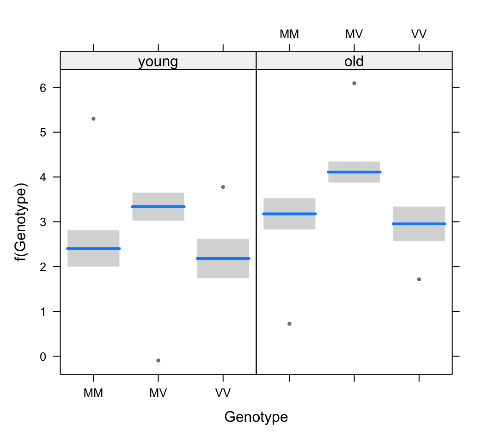
# 7. Fit model with interaction and visualize
# (scale = "response" is broken, visualize on transformed scale instead)
z <- glm(Freq ~ Genotype * Cohort, family = poisson(link = "log"), data = x1)
visreg(z, xvar = "Genotype", by = "Cohort") 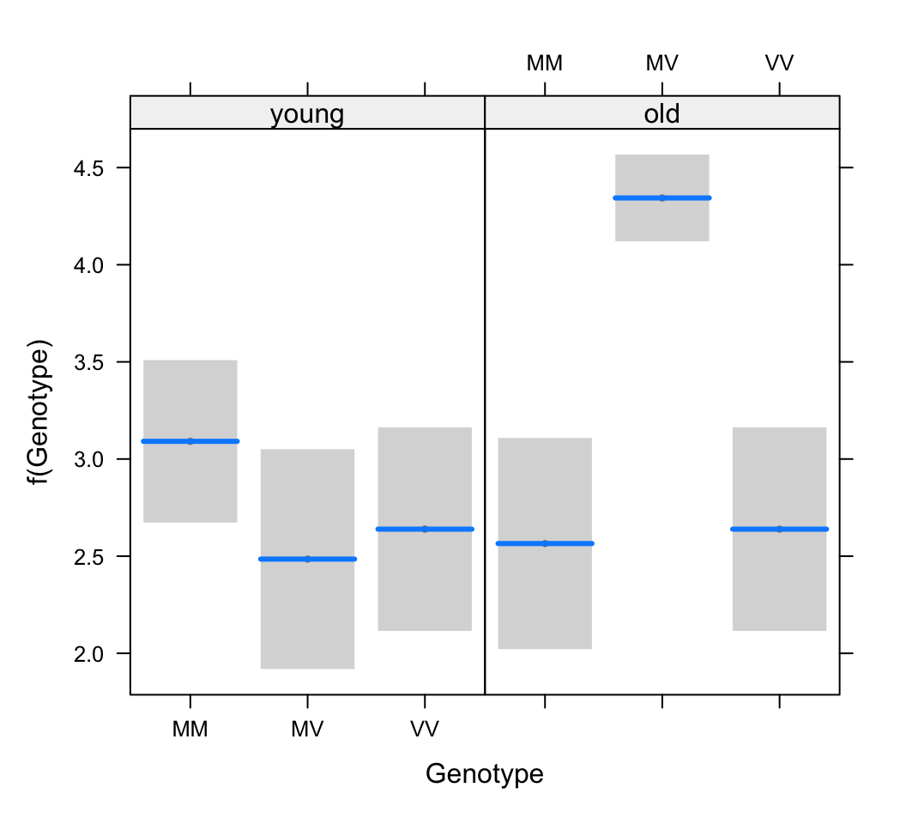
# 8. Test interaction
anova(z, test = "Chi")## Analysis of Deviance Table
##
## Model: poisson, link: log
##
## Response: Freq
##
## Terms added sequentially (first to last)
##
##
## Df Deviance Resid. Df Resid. Dev Pr(>Chi)
## NULL 5 96.501
## Genotype 2 41.174 3 55.327 1.146e-09 ***
## Cohort 1 21.126 2 34.202 4.301e-06 ***
## Genotype:Cohort 2 34.202 0 0.000 3.743e-08 ***
## ---
## Signif. codes: 0 '***' 0.001 '**' 0.01 '*' 0.05 '.' 0.1 ' ' 1© 2009-2026 Dolph Schluter